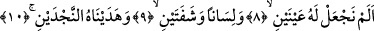
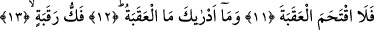
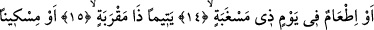
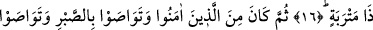
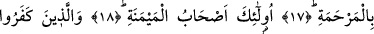
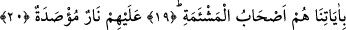

SARP YOKUŞ NEDİR
BİLİR MİSİN?
8. Biz ona iki göz,
9. Bir dil ve iki dudak vermedik mi?
10. Ona iki yolu (doğru ve eğriyi) göstermedik mi?
11. Fakat o, sarp yokuşu aşamadı.
12. O sarp yokuş nedir bilir misin?
13. Köle azat etmek
14. Veya açlık gününde
15. Yakını olan bir yetimi,
15. Yahut aç-açık bir yoksulu doyurmaktır.
17. Sonra îman edenlerden, birbirlerine sabrı tavsiye edenlerden ve birbirlerine
acımayı öğütleyenlerden olmaktır.
18. İşte bunlar kitapları sağdan verileceklerdir.
19. Âyetlerimizi inkâr edenler ise, işte onlar kitapları soldan verileceklerdir.
20. Cezaları kapıları üzerlerine sımsıkı kapatılmış bir ateştir.
“Biz ona” kendisiyle mülk âlemini yerden ta göğe kadar görebileceği “iki göz”
vermedik mi? Bu iki gözüyle bir bakışta kendisiyle arasında nice bin yıllık mesâfe olan
yüksekteki yıldızları görür. Onlarla kendisine zararlı olan şeylerle yararlı olanları
birbirinden ayırır. Âlimin yüzüne, Mushaf’a ve Allah’ın varlığına delalet eden
şâhidlere bakma şerefi gözlerle elde edilir.
Es’iletü’l-hikem’de der ki: Göz bedeni âfetlerden korur. Göz ayna gibi parlaktır.
Karşısına bir nesne gelince ona bakan bir yağ parçası olan gözbebeği küçük olmasına
rağmen o nesnenin sûreti gözde belirir. Allah gözü çok hızlı hareket etme yeteneği ile
yaratmıştır. Göze onu kapatan iki kapak ve kuş kanadı gibi kıllardan örülmüş kirpikler